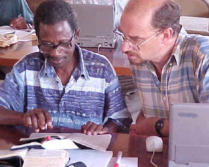

Comparing and merging versions
In Translation Editor, a saved version is a collection of Scripture books at one stage in the translation process. You can compare a saved version to the current version of a book.
Here is a picture of Bible translators comparing translations of a Scripture book.
